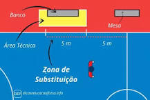

Quando os jogadores de vôlei trocam de posição? Durante o decorrer do jogo, os atletas são obrigados a realizar uma troca de posições, denominada rodízio. O rodízio é realizado no sentido horário e acontece todas as vezes que a equipe que recebeu o saque recupera a posse de bola, ganhando o direito de efetuar o saque.
O árbitro da partida deve autorizar a substituição, uma vez que ela esteja de acordo com as regras. Um jogador de formação inicial só poderá ser substituído por um reserva uma vez em cada set. O jogador reserva também só poderá ser substituído uma vez em cada set e pelo mesmo jogador titular.
Um jogador da formação inicial pode deixar o jogo e retornar, mas somente uma vez no set e para sua posição original na formação. Exemplo: O jogador João foi substituído pelo jogador José, o João poderá retornar ao jogo, mas somente no lugar do jogador José.
1. As substituições no Vôlei devem ocorrer dentro da zona de substituição.
2. Uma substituição no Voleibol deve durar somente o tempo necessário para o registro na súmula e permitir a entrada e saída dos jogadores.
3. Uma substituição é “solicitada” quando da entrada dos jogadores substitutos na zona de substituição, prontos para jogar, durante uma interrupção regulamentar. Não é necessário que o técnico faça o sinal manual oficial, exceto em caso de lesão ou antes do início de um set.
4. Caso o jogador não esteja pronto, a substituição não será autorizada e a equipe será sancionada com um retardamento.
5. A solicitação de substituição é reconhecida e anunciada pelo apontador ou 2o árbitro, respectivamente, pelo uso da campainha ou do apito. O 2o árbitro autoriza a substituição.
6. Para as Competições Mundiais e Oficiais da FIVB, plaquetas numeradas são usadas para facilitar as substituições. (Mesmo quando usados dispositivos eletrônicos).